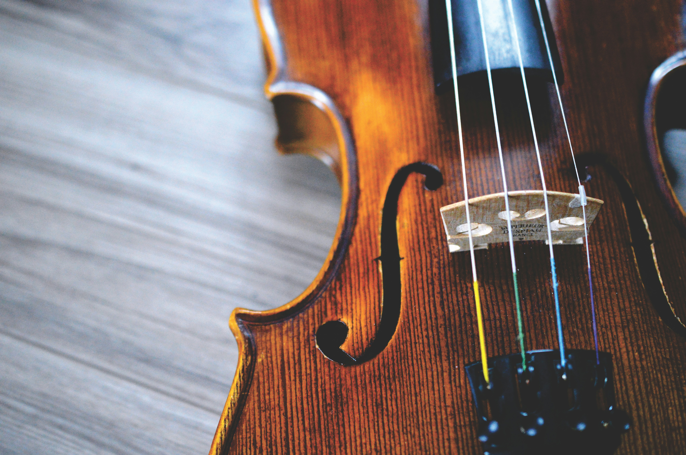
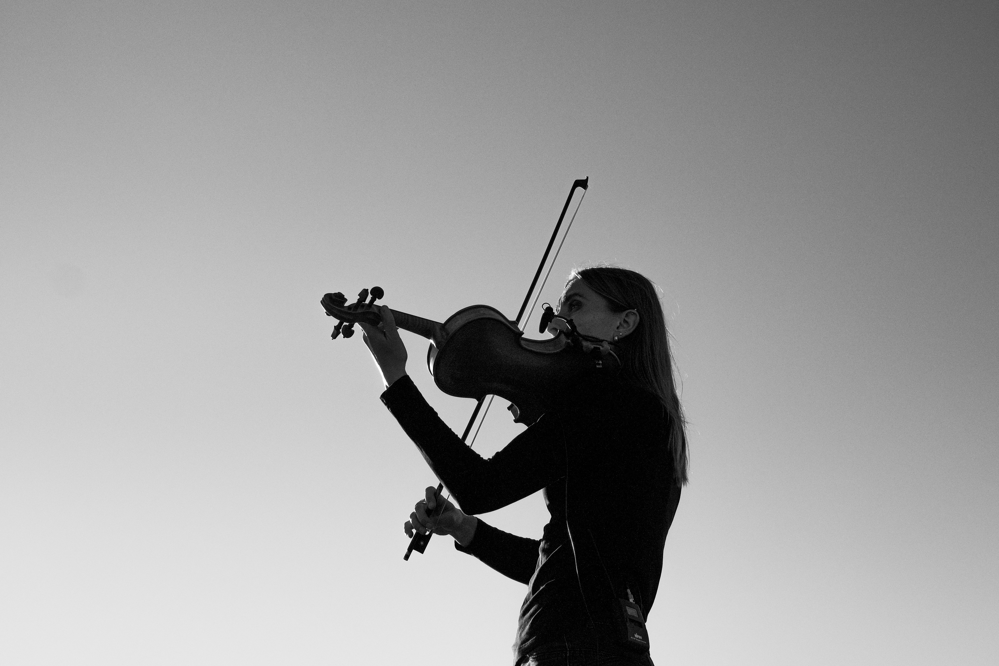

Description:
The viola is a string instrument that looks very similar to the violin but is slightly larger and has a deeper, warmer sound. It is commonly used in orchestras, chamber groups, and solo music, where it often helps fill the middle range between the violin and cello. The main parts of a viola include the scroll, tuning pegs, neck, fingerboard, strings, bridge, body, sound holes, chin rest, tailpiece, and bow.

How to Play the Viola:
The viola is played in a similar way to the violin. The player draws a bow across the strings while pressing the strings against the fingerboard to change notes. It can also be played by plucking the strings. Because the viola is slightly larger than the violin, the player usually uses a somewhat wider hand position.
